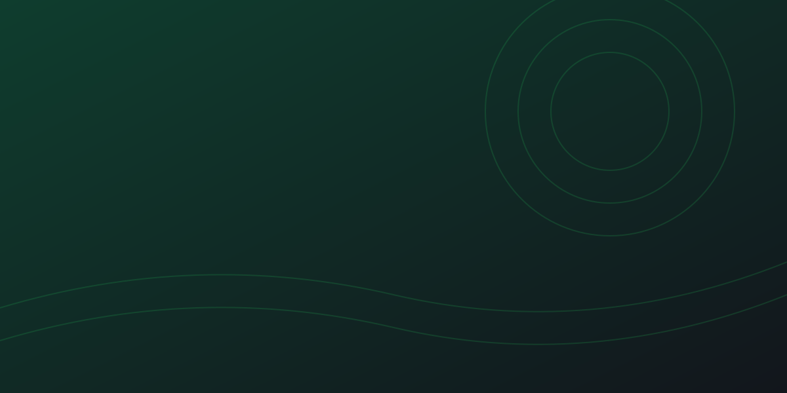

Dialer Cristian De Cesare · Allenamento alle telefonate
Prima di tutto
Chi si allena
Le pagelle arrivano anche a Cristian, così vede come vanno gli allenamenti.
Primo passo
Con chi ti alleni
Secondo passo
Quanto deve essere dura
Due obiezioni, più una che non ti dice finché non fai la domanda giusta. Quando è pronta te lo fa capire.
Terzo passo
Come parlate
Con le cuffie o in una stanza tranquilla. Il telefono ti chiederà il microfono.
IA È una simulazione: voce e risposte sono generate da un'intelligenza artificiale, non c'è nessuna persona dall'altra parte. Per chiudere prima, di' «stop, pagella».
Il canovaccio della chiusura
Cosa non dire e non promettere
Non è ancora deciso, quindi non si promette:
Ripassa la scheda prima di iniziare
Formazione
I dolori che risolviamo
Tutte le obiezioni, con la risposta
I tuoi allenamenti